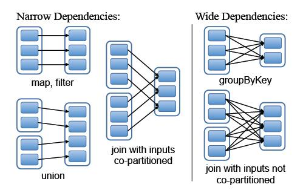
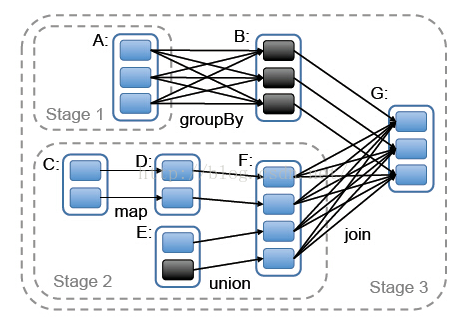

理解Spark核心之RDD
Spark是围绕RDD的概念展开的，RDD是可以并行操作的容错元素集合。RDD全称是Resilient Distributed Datasets（弹性分布式数据集）
理解RDD
如果你在Spark集群中加载了一个很大的文本数据，Spark就会将该文本抽象为一个RDD，这个RDD根据你定义的分区策略（比如HashKey）可以分为数个Partition，这样就可以对各个分区进行并行处理，从而提高效率。
RDD是一个容错的，并行的数据结构，可以让用户显示地将数据存储到磁盘和内存中，并能控制数据的分区。同时，RDD还提供了一组丰富的操作来操作这些数据。在这些操作中，比如Map、flatMap、filter等转换操作实现了monad模式（Monad是一种设计模式，表示将一个运算过程，通过函数拆解成互相连接的多个步骤；你只要提供下一步运算所需的函数，整个运算就会自动进行下去。），很好的切合了Scala的集合操作。另外，RDD还提供了比如join，groupBy，reduceByKey（action操作）等更为方便的操作，用来支持常见的数据运算。
RDD是一系列只读分区的集合，它只能从文件中读取并创建，或者从旧的RDD生成新的RDD。RDD的每一次变换操作都会生成新的RDD，而不是在原来的基础上进行修改，这种粗粒度的数据操作方式为RDD带来了容错和数据共享方面的优势，但是在面对大数据集中频繁的小操作的时候，显得效率比较低下。
RDD原理
RDD实际上是一个类（sc.textFile()方法返回一个RDD对象，然后用line接收这个对象），而这个RDD类中也定义了一系列的用于操作的方法，也就是一些算子操作。
这个类为了实现对数据的操作，里面有分区信息，用于记录特定RDD的分区情况；依赖关系，指向其父RDD；一个函数，用于记录父RDD到自己的转换操作；划分策略和数据位置的元数据。在DAG中这样的RDD就可以看成一个个节点，RDD中的存储的依赖关系就是DAG的边。在Spark中，数据在物理上被划分为一个个的block，这些block由blockmanager统一管理的。
在设计RDD之间的依赖关系时，设计者将RDD之间的依赖关系分为两类：窄依赖和宽依赖。RDD作为数据结构，本质上是一个只读的分区记录集合。一个RDD可以包含多个分区，每个分区就是一个DataSet片段。RDD可以相互依赖，如果RDD的每个分区最多只能被一个Child RDD的一个分区使用，则称之位narrow dependency（窄依赖）；若多个Child RDD分区都可以依赖，则称为wide dependency（宽依赖），而join操作则会产生wide dependency。


Spark之所以将依赖分为narrow与wide，基于以下两点原因：
narrow dependecies可以支持在同一个cluster node上，并且以管道形式执行多行命令，例如在执行了map操作后，紧接着执行filter。相反，wide dependencies需要所有的父分区都是可用的，可能还需要调用类似MapReduce之类的操作进行跨节点传递。
其次从失败恢复的角度考虑，narrow dependencies的失败恢复更有效，因为它只需要重新计算丢失的parent partition即可，而且可以并行的在不同节点进行重计算。而wide dependencies牵涉到RDD各级的多个parent partitions。
总结
RDD是Spark的核心，也是整个Spark架构的基础，特性总结如下：
- 不变的数据结构存储
- 支持跨集群的分布式数据结构
- 可以根据数据记录的Key对结构进行分区
- 提供了粗粒度的操作，且这些操作支持分区
- 它将数据存储在内存中，从而提供了低延迟性